| Price | Current Conditions (%) | Overall Conditions (%) | Stability Score |
|---|---|---|---|
| Low from Previous Close > -2% | 98.10 | 93.78 | 1.00 |
| Low from Previous Close > -1% | 87.91 | 78.32 | 0.99 |
| Low from Previous Close > -0.5% | 65.48 | 56.29 | 0.97 |
| Low from Previous Close > -0.25% | 41.87 | 38.01 | 0.95 |
| High from Previous Close > 0.25% | 58.64 | 65.78 | 0.99 |
| High from Previous Close > 0.5% | 34.21 | 45.60 | 0.99 |
| High from Previous Close > 1% | 10.34 | 20.40 | 1.00 |
| High from Previous Close > 2% | 1.44 | 4.49 | 0.98 |
| Close from Previous Close > -1% | 93.67 | 87.95 | 1.00 |
| Close from Previous Close > -0.5% | 84.16 | 76.95 | 0.99 |
| Close from Previous Close > 0% | 53.29 | 53.73 | 0.99 |
| Close from Previous Close > 0.5% | 20.94 | 27.93 | 0.99 |
| Close from Previous Close > 1% | 7.20 | 13.40 | 1.00 |
| Range Within ±0.5% of Previous Close | 36.42 | 21.87 | 0.93 |
| Range Within ±1% of Previous Close | 77.88 | 59.60 | 0.99 |
| Range Within ±2% of Previous Close | 96.66 | 89.51 | 1.00 |
| Range Within ±3% of Previous Close | 99.28 | 96.52 | 1.00 |
| Close Within ±0.5% of Previous Close | 63.22 | 49.02 | 0.99 |
| Close Within ±1% of Previous Close | 86.47 | 74.54 | 0.99 |
| Volatility | 5-Day | 21-Day | Note |
|---|---|---|---|
| Realized Volatility (RV) (%) | 1.3 | 3.55 | Accumulated over the last N periods (not annualized) |
| 52-Week RV Percentile (%) | 37.0 | 51.0 | |
| RV Regime | Normal Volatility | Normal Volatility | |
| MEPR | 7347.86 – 7740.72 | 7008.44 – 8080.14 | Coverage Rate: 99.04% / 100.0% |
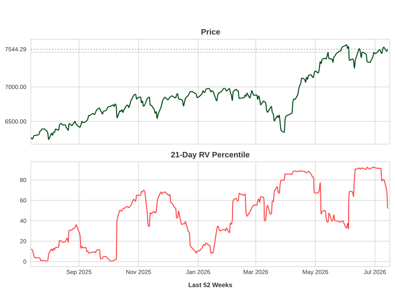
| Absolute Range (%) | Current Conditions (%) | Overall Conditions (%) | |||||||
|---|---|---|---|---|---|---|---|---|---|
| Mon | Tue | Wed | Thu | Fri | Absolute Range from Friday Close to Wednesday | Absolute Range from Wednesday Close to Friday | Absolute Range from Friday Close to Wednesday | Absolute Range from Wednesday Close to Friday | |
| count | 1685 | 1838 | 1833 | 1800 | 1789 | 60 | 59 | 1768 | 1770 |
| mean | 1.10 | 1.09 | 1.07 | 1.12 | 1.08 | 1.78 | 1.58 | 1.90 | 1.59 |
| std | 1.02 | 0.87 | 0.87 | 0.90 | 0.82 | 1.15 | 1.31 | 1.45 | 1.24 |
| min | 0.14 | 0.11 | 0.15 | 0.15 | 0.08 | 0.33 | 0.32 | 0.20 | 0.08 |
| 25% | 0.51 | 0.55 | 0.53 | 0.55 | 0.55 | 0.97 | 0.81 | 0.99 | 0.80 |
| 50% | 0.81 | 0.84 | 0.85 | 0.88 | 0.84 | 1.54 | 1.31 | 1.51 | 1.26 |
| 75% | 1.33 | 1.34 | 1.33 | 1.40 | 1.38 | 2.27 | 1.79 | 2.34 | 1.98 |
| max | 12.18 | 10.79 | 10.01 | 9.58 | 9.30 | 5.42 | 8.71 | 16.14 | 14.74 |
| Price | Current Conditions (%) | Overall Conditions (%) | Stability Score |
|---|---|---|---|
| Low from Previous Close > -2% | 83.82 | 72.23 | 0.99 |
| Low from Previous Close > -1% | 56.65 | 49.19 | 0.97 |
| High from Previous Close > 1% | 47.78 | 56.69 | 0.99 |
| High from Previous Close > 2% | 14.64 | 25.77 | 0.97 |
| Close from Previous Close > -2% | 91.91 | 86.72 | 1.00 |
| Close from Previous Close > -1% | 79.38 | 74.59 | 0.99 |
| Close from Previous Close > 0% | 56.07 | 56.69 | 0.99 |
| Close from Previous Close > 1% | 28.71 | 33.81 | 0.99 |
| Close from Previous Close > 2% | 8.09 | 15.80 | 0.99 |
| Range Within ±1% of Previous Close | 18.11 | 11.60 | 0.92 |
| Range Within ±2% of Previous Close | 70.33 | 49.71 | 0.97 |
| Range Within ±3% of Previous Close | 89.21 | 73.75 | 1.00 |
| Close Within ±1% of Previous Close | 50.67 | 40.79 | 0.99 |
| Trend | Support/Resistance | Duration | Trend Persistence |
|---|---|---|---|
Uptrend | 7400.79 | 1.00 | 0.09 |
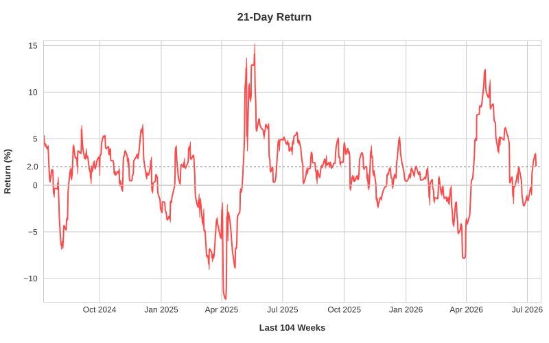
| After -5% | After -10% | After -15% | After -20% | |||||||||||||
|---|---|---|---|---|---|---|---|---|---|---|---|---|---|---|---|---|
| 5 Days5D | 21 Days21D | 63 Days63D | 252 Days252D | 5 Days5D | 21 Days21D | 63 Days63D | 252 Days252D | 5 Days5D | 21 Days21D | 63 Days63D | 252 Days252D | 5 Days5D | 21 Days21D | 63 Days63D | 252 Days252D | |
| count | 744 | 744 | 744 | 739 | 162 | 162 | 162 | 162 | 55 | 55 | 55 | 55 | 22 | 22 | 22 | 22 |
| mean | 3.21 | 6.15 | 10.34 | 20.85 | 5.29 | 9.68 | 15.75 | 29.27 | 7.52 | 13.77 | 21.02 | 39.51 | 8.73 | 14.76 | 21.71 | 40.45 |
| std | 2.81 | 4.54 | 7.07 | 14.91 | 4.23 | 5.98 | 9.21 | 18.16 | 5.30 | 6.48 | 11.54 | 21.77 | 5.50 | 6.85 | 13.47 | 24.59 |
| min | -5.46 | -3.02 | -0.69 | -0.35 | -5.46 | -3.02 | -0.15 | -0.15 | -5.46 | 0.95 | 0.95 | 7.65 | -2.46 | 2.24 | 2.24 | 8.42 |
| 25% | 1.33 | 2.80 | 5.15 | 8.77 | 2.33 | 5.15 | 9.13 | 15.62 | 4.45 | 9.53 | 13.09 | 20.26 | 6.73 | 10.95 | 10.95 | 19.06 |
| 50% | 2.67 | 5.38 | 9.03 | 18.84 | 4.54 | 8.64 | 14.32 | 24.30 | 7.78 | 14.33 | 18.68 | 32.41 | 8.24 | 14.84 | 17.41 | 27.68 |
| 75% | 4.47 | 8.36 | 13.85 | 29.71 | 7.59 | 13.75 | 19.45 | 38.99 | 10.61 | 18.76 | 30.74 | 61.26 | 13.87 | 19.30 | 33.67 | 64.71 |
| 90% | 6.61 | 12.25 | 18.86 | 39.31 | 10.90 | 18.68 | 30.29 | 59.85 | 14.45 | 21.29 | 36.00 | 66.55 | 15.84 | 24.43 | 39.79 | 69.73 |
| max | 19.11 | 28.69 | 44.50 | 78.06 | 19.11 | 28.69 | 44.50 | 78.06 | 19.11 | 28.69 | 44.50 | 78.06 | 17.86 | 28.69 | 44.50 | 78.06 |
| After -5% | After -10% | After -15% | After -20% | |||||||||||||
|---|---|---|---|---|---|---|---|---|---|---|---|---|---|---|---|---|
| 5 Days5D | 21 Days21D | 63 Days63D | 252 Days252D | 5 Days5D | 21 Days21D | 63 Days63D | 252 Days252D | 5 Days5D | 21 Days21D | 63 Days63D | 252 Days252D | 5 Days5D | 21 Days21D | 63 Days63D | 252 Days252D | |
| count | 744 | 744 | 744 | 739 | 162 | 162 | 162 | 162 | 55 | 55 | 55 | 55 | 22 | 22 | 22 | 22 |
| mean | -3.21 | -6.28 | -9.13 | -15.51 | -4.67 | -7.10 | -9.52 | -14.34 | -5.64 | -7.94 | -10.65 | -14.12 | -6.05 | -10.07 | -13.00 | -17.41 |
| std | 3.50 | 6.39 | 8.23 | 13.06 | 4.91 | 6.83 | 8.16 | 11.05 | 5.23 | 7.05 | 8.84 | 11.64 | 5.17 | 6.62 | 8.55 | 12.16 |
| min | -23.60 | -30.80 | -39.85 | -50.64 | -23.60 | -26.26 | -33.50 | -46.76 | -16.81 | -22.33 | -26.15 | -33.54 | -15.70 | -20.33 | -25.62 | -33.07 |
| 10% | -4.49 | -8.50 | -13.42 | -23.44 | -7.00 | -9.69 | -13.28 | -22.23 | -8.81 | -14.12 | -18.86 | -25.75 | -8.92 | -15.56 | -18.52 | -26.68 |
| 25% | -2.33 | -4.30 | -7.07 | -12.01 | -3.28 | -4.88 | -7.50 | -11.09 | -4.86 | -6.94 | -8.60 | -9.33 | -6.33 | -10.73 | -14.41 | -22.70 |
| 50% | -0.73 | -1.72 | -2.87 | -5.00 | -1.07 | -1.74 | -3.71 | -5.34 | -1.53 | -1.61 | -3.82 | -4.29 | -2.12 | -6.43 | -8.26 | -8.26 |
| 75% | 0.00 | -0.30 | -0.60 | -1.47 | -0.17 | -0.23 | -0.82 | -2.34 | -0.07 | -0.09 | -0.85 | -1.00 | -0.20 | -1.18 | -1.18 | -1.18 |
| max | 4.78 | 4.78 | 4.78 | 4.78 | 4.78 | 4.78 | 4.78 | 4.78 | 4.78 | 4.78 | 4.78 | 4.78 | 4.78 | 4.78 | 4.78 | 4.78 |
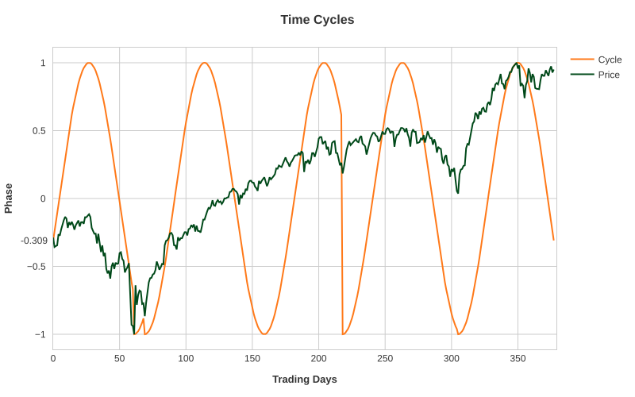
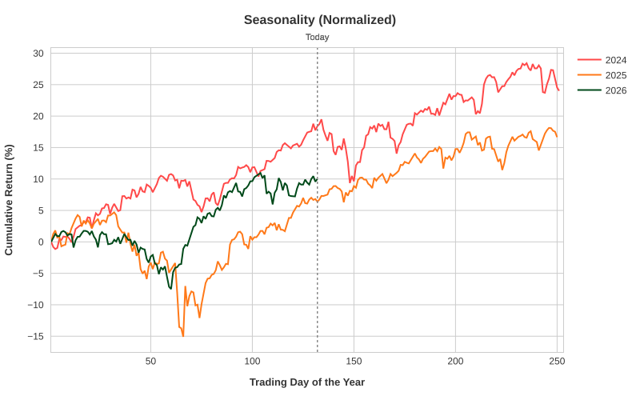
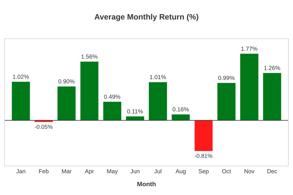
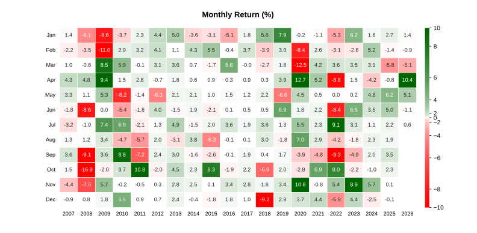
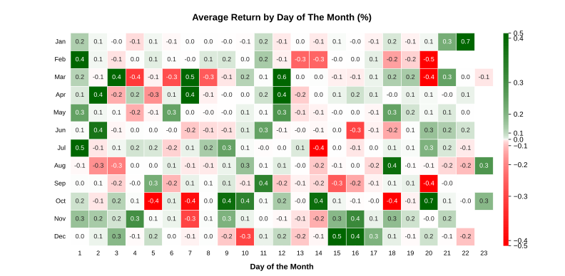
| Price | Current Conditions (%) | Overall Conditions (%) | Stability Score |
|---|---|---|---|
| Low from Previous Close > -2% | 70.00 | 69.82 | 0.98 |
| Low from Previous Close > -1% | 60.00 | 43.35 | 0.98 |
| Low from Previous Close > -0.5% | 20.00 | 24.48 | 0.96 |
| Low from Previous Close > -0.25% | 10.00 | 15.81 | 0.99 |
| High from Previous Close > 0.25% | 100.00 | 84.74 | 0.99 |
| High from Previous Close > 0.5% | 90.00 | 76.00 | 0.97 |
| High from Previous Close > 1% | 90.00 | 57.26 | 0.94 |
| High from Previous Close > 2% | 80.00 | 29.72 | 0.91 |
| Close from Previous Close > -1% | 90.00 | 72.37 | 0.99 |
| Close from Previous Close > -0.5% | 90.00 | 63.23 | 0.99 |
| Close from Previous Close > 0% | 80.00 | 52.06 | 1.00 |
| Close from Previous Close > 0.5% | 80.00 | 40.34 | 0.97 |
| Close from Previous Close > 1% | 80.00 | 29.65 | 0.94 |
| Range Within ±0.5% of Previous Close | 0.00 | 0.24 | 0.57 |
| Range Within ±1% of Previous Close | 0.00 | 8.33 | 0.75 |
| Range Within ±2% of Previous Close | 20.00 | 44.62 | 0.92 |
| Range Within ±3% of Previous Close | 40.00 | 70.73 | 0.96 |
| Close Within ±0.5% of Previous Close | 10.00 | 22.89 | 0.91 |
| Close Within ±1% of Previous Close | 10.00 | 42.72 | 0.94 |
| Volatility | 5-Day | 21-Day | Note |
|---|---|---|---|
| Realized Volatility (RV) (%) | 10.43 | 15.75 | Accumulated over the last N periods (not annualized) |
| 52-Week RV Percentile (%) | 87.0 | 72.0 | |
| RV Regime | High Volatility | Normal Volatility | |
| MEPR | 63.18 – 96.48 | 54.68 – 104.98 | Coverage Rate: 99.01% / 99.95% |
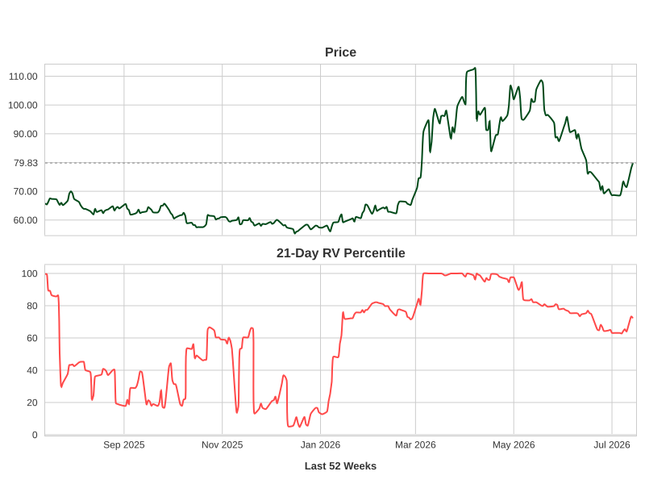
| Absolute Range (%) | Current Conditions (%) | Overall Conditions (%) | |||||||
|---|---|---|---|---|---|---|---|---|---|
| Mon | Tue | Wed | Thu | Fri | Absolute Range from Friday Close to Wednesday | Absolute Range from Wednesday Close to Friday | Absolute Range from Friday Close to Wednesday | Absolute Range from Wednesday Close to Friday | |
| count | 778 | 856 | 851 | 837 | 833 | 2 | 2 | 822 | 823 |
| mean | 3.25 | 2.88 | 2.88 | 2.73 | 2.58 | 3.35 | 3.46 | 5.03 | 3.73 |
| std | 11.71 | 5.75 | 2.59 | 2.78 | 1.98 | 3.00 | 0.72 | 11.59 | 3.42 |
| min | 0.45 | 0.38 | 0.44 | 0.48 | 0.48 | 1.23 | 2.95 | 0.75 | 0.50 |
| 25% | 1.47 | 1.48 | 1.58 | 1.44 | 1.41 | 2.29 | 3.20 | 2.71 | 2.10 |
| 50% | 2.15 | 2.19 | 2.35 | 2.11 | 2.11 | 3.35 | 3.46 | 3.80 | 2.94 |
| 75% | 3.34 | 3.28 | 3.46 | 3.13 | 3.12 | 4.41 | 3.71 | 5.40 | 4.29 |
| max | 320.69 | 160.01 | 39.84 | 36.03 | 22.84 | 5.47 | 3.97 | 320.69 | 43.43 |
| Price | Current Conditions (%) | Overall Conditions (%) | Stability Score |
|---|---|---|---|
| Low from Previous Close > -2% | 50.00 | 37.13 | 0.98 |
| Low from Previous Close > -1% | 50.00 | 20.37 | 0.99 |
| High from Previous Close > 1% | 100.00 | 80.28 | 0.99 |
| High from Previous Close > 2% | 100.00 | 62.65 | 0.96 |
| Close from Previous Close > -2% | 100.00 | 70.87 | 0.99 |
| Close from Previous Close > -1% | 100.00 | 63.09 | 0.99 |
| Close from Previous Close > 0% | 100.00 | 52.79 | 1.0 |
| Close from Previous Close > 1% | 100.00 | 42.39 | 0.97 |
| Close from Previous Close > 2% | 100.00 | 32.64 | 0.95 |
| Range Within ±1% of Previous Close | 0.00 | 0.00 | N/A |
| Range Within ±2% of Previous Close | 0.00 | 3.94 | 0.65 |
| Range Within ±3% of Previous Close | 0.00 | 17.63 | 0.83 |
| Close Within ±1% of Previous Close | 0.00 | 20.70 | 0.9 |
| Trend | Support/Resistance | Duration | Trend Persistence |
|---|---|---|---|
Downtrend | 75.32 | 10.00 | 0.97 |
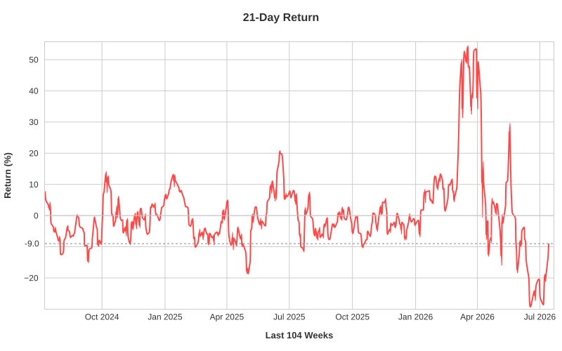
| After -5% | After -10% | After -15% | After -20% | |||||||||||||
|---|---|---|---|---|---|---|---|---|---|---|---|---|---|---|---|---|
| 5 Days5D | 21 Days21D | 63 Days63D | 252 Days252D | 5 Days5D | 21 Days21D | 63 Days63D | 252 Days252D | 5 Days5D | 21 Days21D | 63 Days63D | 252 Days252D | 5 Days5D | 21 Days21D | 63 Days63D | 252 Days252D | |
| count | 1148 | 1132 | 1116 | 1078 | 547 | 531 | 525 | 521 | 245 | 229 | 227 | 227 | 102 | 87 | 87 | 87 |
| mean | 5.03 | 9.89 | 18.67 | 38.53 | 6.55 | 12.84 | 23.53 | 46.70 | 8.78 | 17.25 | 31.46 | 64.32 | 13.32 | 26.91 | 51.25 | 110.43 |
| std | 8.04 | 15.23 | 25.18 | 49.44 | 10.88 | 20.53 | 32.08 | 62.38 | 15.37 | 29.07 | 42.89 | 84.24 | 22.10 | 43.75 | 60.73 | 116.72 |
| min | -11.94 | -11.94 | -3.88 | -0.83 | -11.94 | -11.94 | -3.88 | -0.61 | -11.94 | -11.94 | -3.88 | -0.61 | -0.63 | -0.63 | -0.63 | 2.69 |
| 25% | 1.68 | 3.16 | 5.09 | 11.70 | 2.01 | 3.98 | 6.15 | 14.34 | 2.06 | 4.53 | 7.76 | 16.39 | 3.40 | 5.47 | 8.43 | 17.94 |
| 50% | 3.42 | 6.91 | 13.19 | 24.52 | 4.23 | 8.93 | 15.09 | 27.74 | 5.23 | 10.84 | 17.92 | 31.42 | 6.74 | 11.49 | 27.45 | 38.60 |
| 75% | 6.21 | 12.57 | 22.24 | 42.53 | 7.93 | 15.39 | 25.66 | 52.57 | 9.91 | 17.49 | 33.69 | 73.44 | 12.33 | 24.57 | 75.73 | 185.41 |
| 90% | 10.14 | 18.84 | 34.29 | 91.16 | 12.10 | 21.95 | 50.42 | 101.69 | 16.21 | 28.92 | 78.87 | 184.95 | 32.16 | 47.23 | 109.51 | 242.12 |
| max | 160.01 | 191.96 | 266.46 | 487.55 | 160.01 | 191.96 | 266.46 | 487.55 | 160.01 | 191.96 | 266.46 | 487.55 | 160.01 | 191.96 | 266.46 | 487.55 |
| After -5% | After -10% | After -15% | After -20% | |||||||||||||
|---|---|---|---|---|---|---|---|---|---|---|---|---|---|---|---|---|
| 5 Days5D | 21 Days21D | 63 Days63D | 252 Days252D | 5 Days5D | 21 Days21D | 63 Days63D | 252 Days252D | 5 Days5D | 21 Days21D | 63 Days63D | 252 Days252D | 5 Days5D | 21 Days21D | 63 Days63D | 252 Days252D | |
| count | 1148 | 1132 | 1116 | 1078 | 547 | 531 | 525 | 521 | 245 | 229 | 227 | 227 | 102 | 87 | 87 | 87 |
| mean | -6.03 | -14.71 | -24.46 | -38.28 | -8.20 | -21.86 | -34.77 | -48.07 | -11.29 | -35.98 | -52.99 | -66.05 | -19.53 | -75.17 | -97.56 | -104.50 |
| std | 20.61 | 38.04 | 50.17 | 56.66 | 29.35 | 53.79 | 66.42 | 70.43 | 38.43 | 76.42 | 89.54 | 88.48 | 58.50 | 113.07 | 120.67 | 116.28 |
| min | -320.69 | -320.69 | -320.69 | -320.69 | -320.69 | -320.69 | -320.69 | -320.69 | -302.92 | -302.92 | -302.92 | -302.92 | -302.92 | -302.92 | -302.92 | -302.92 |
| 10% | -6.70 | -14.25 | -20.74 | -37.60 | -7.90 | -17.73 | -25.64 | -41.19 | -9.15 | -20.97 | -29.23 | -44.87 | -12.08 | -41.06 | -241.38 | -241.38 |
| 25% | -3.54 | -7.42 | -11.44 | -20.00 | -4.36 | -9.68 | -13.09 | -23.94 | -5.48 | -12.96 | -16.94 | -33.60 | -6.38 | -19.46 | -23.94 | -38.51 |
| 50% | -1.50 | -3.05 | -5.27 | -9.77 | -1.92 | -4.37 | -6.76 | -9.72 | -2.48 | -5.40 | -7.31 | -13.58 | -3.38 | -10.55 | -14.81 | -24.31 |
| 75% | -0.49 | -1.12 | -1.74 | -4.12 | -0.47 | -1.31 | -2.17 | -4.64 | -0.45 | -1.34 | -2.11 | -5.48 | -0.44 | -3.46 | -4.24 | -6.56 |
| max | 117.27 | 117.27 | 117.27 | 117.27 | 117.27 | 117.27 | 117.27 | 117.27 | 117.27 | 117.27 | 117.27 | 117.27 | 117.27 | 117.27 | 117.27 | 117.27 |
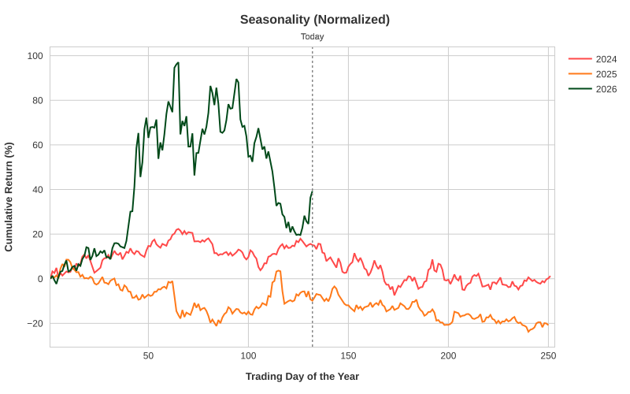
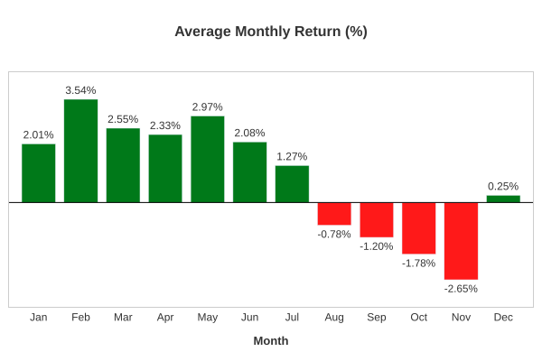
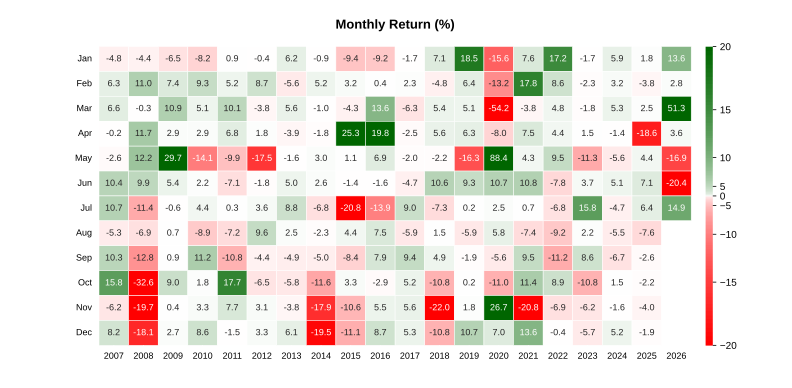
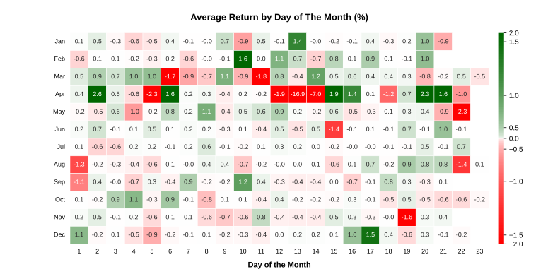
| Price | Current Conditions (%) | Overall Conditions (%) | Stability Score |
|---|---|---|---|
| Low from Previous Close > -2% | 100.00 | 99.02 | 1.00 |
| Low from Previous Close > -1% | 90.95 | 89.13 | 1.00 |
| Low from Previous Close > -0.5% | 68.31 | 64.28 | 0.97 |
| Low from Previous Close > -0.25% | 41.15 | 37.73 | 0.98 |
| High from Previous Close > 0.25% | 67.08 | 63.98 | 1.00 |
| High from Previous Close > 0.5% | 34.57 | 36.74 | 1.00 |
| High from Previous Close > 1% | 7.82 | 9.76 | 0.94 |
| High from Previous Close > 2% | 0.82 | 0.87 | 0.90 |
| Close from Previous Close > -1% | 96.30 | 94.45 | 1.00 |
| Close from Previous Close > -0.5% | 85.19 | 81.80 | 0.99 |
| Close from Previous Close > 0% | 54.32 | 50.46 | 0.99 |
| Close from Previous Close > 0.5% | 19.75 | 18.95 | 0.99 |
| Close from Previous Close > 1% | 3.29 | 4.94 | 0.96 |
| Range Within ±0.5% of Previous Close | 36.21 | 32.89 | 0.96 |
| Range Within ±1% of Previous Close | 83.13 | 79.56 | 0.99 |
| Range Within ±2% of Previous Close | 99.18 | 98.15 | 1.00 |
| Range Within ±3% of Previous Close | 99.59 | 99.70 | 1.00 |
| Close Within ±0.5% of Previous Close | 65.43 | 62.84 | 0.99 |
| Close Within ±1% of Previous Close | 93.00 | 89.51 | 1.00 |
| Volatility | 5-Day | 21-Day | Note |
|---|---|---|---|
| Realized Volatility (RV) (%) | 0.64 | 1.98 | Accumulated over the last N periods (not annualized) |
| 52-Week RV Percentile (%) | 11.0 | 34.0 | |
| RV Regime | Low Volatility | Normal Volatility | |
| MEPR | 109.33 – 112.17 | 106.35 – 115.15 | Coverage Rate: 99.09% / 99.97% |
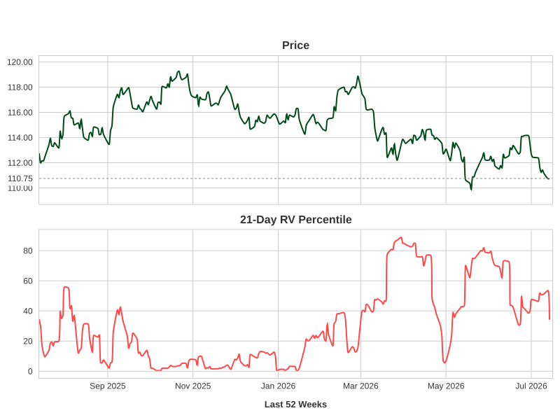
| Absolute Range (%) | Current Conditions (%) | Overall Conditions (%) | |||||||
|---|---|---|---|---|---|---|---|---|---|
| Mon | Tue | Wed | Thu | Fri | Absolute Range from Friday Close to Wednesday | Absolute Range from Wednesday Close to Friday | Absolute Range from Friday Close to Wednesday | Absolute Range from Wednesday Close to Friday | |
| count | 1666 | 1836 | 1832 | 1799 | 1789 | 45 | 48 | 1767 | 1768 |
| mean | 0.68 | 0.75 | 0.73 | 0.77 | 0.82 | 1.20 | 1.13 | 1.24 | 1.13 |
| std | 0.51 | 0.62 | 0.45 | 0.45 | 0.58 | 0.50 | 0.79 | 0.85 | 0.73 |
| min | 0.08 | 0.09 | 0.11 | 0.14 | 0.15 | 0.39 | 0.39 | 0.23 | 0.21 |
| 25% | 0.40 | 0.44 | 0.43 | 0.46 | 0.49 | 0.88 | 0.66 | 0.75 | 0.70 |
| 50% | 0.57 | 0.62 | 0.63 | 0.67 | 0.72 | 1.00 | 0.95 | 1.06 | 0.98 |
| 75% | 0.83 | 0.90 | 0.89 | 0.96 | 1.00 | 1.49 | 1.29 | 1.54 | 1.39 |
| max | 10.71 | 17.69 | 6.64 | 6.14 | 15.81 | 2.40 | 4.87 | 18.74 | 18.15 |
| Price | Current Conditions (%) | Overall Conditions (%) | Stability Score |
|---|---|---|---|
| Low from Previous Close > -2% | 75.00 | 86.23 | 0.99 |
| Low from Previous Close > -1% | 50.00 | 59.17 | 0.97 |
| High from Previous Close > 1% | 50.00 | 44.19 | 1.00 |
| High from Previous Close > 2% | 25.00 | 14.03 | 0.99 |
| Close from Previous Close > -2% | 100.00 | 92.80 | 1.00 |
| Close from Previous Close > -1% | 75.00 | 78.93 | 0.99 |
| Close from Previous Close > 0% | 75.00 | 52.02 | 0.97 |
| Close from Previous Close > 1% | 25.00 | 22.60 | 0.95 |
| Close from Previous Close > 2% | 0.00 | 5.62 | 0.97 |
| Range Within ±1% of Previous Close | 0.00 | 21.60 | 0.94 |
| Range Within ±2% of Previous Close | 50.00 | 72.36 | 0.99 |
| Range Within ±3% of Previous Close | 100.00 | 92.49 | 1.00 |
| Close Within ±1% of Previous Close | 50.00 | 56.33 | 0.99 |
| Trend | Support/Resistance | Duration | Trend Persistence |
|---|---|---|---|
Downtrend | 112.78 | 2.00 | 0.23 |
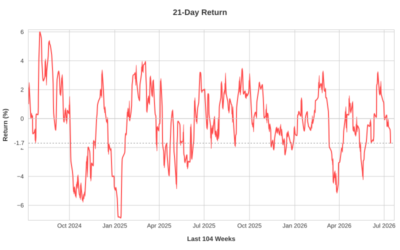
| After -5% | After -10% | After -15% | After -20% | |||||||||||||
|---|---|---|---|---|---|---|---|---|---|---|---|---|---|---|---|---|
| 5 Days5D | 21 Days21D | 63 Days63D | 252 Days252D | 5 Days5D | 21 Days21D | 63 Days63D | 252 Days252D | 5 Days5D | 21 Days21D | 63 Days63D | 252 Days252D | 5 Days5D | 21 Days21D | 63 Days63D | 252 Days252D | |
| count | 349 | 349 | 349 | 348 | 22 | 22 | 22 | 22 | 21 | 21 | 21 | 21 | 5 | 5 | 5 | 5 |
| mean | 1.28 | 2.57 | 4.91 | 9.04 | 0.94 | 4.14 | 9.28 | 17.30 | 0.90 | 4.19 | 9.45 | 17.85 | 1.27 | 5.25 | 10.60 | 18.71 |
| std | 1.07 | 2.48 | 4.73 | 6.14 | 0.77 | 2.30 | 2.09 | 2.99 | 0.77 | 2.34 | 1.98 | 1.51 | 0.35 | 2.18 | 1.48 | 1.06 |
| min | -0.94 | -0.91 | -0.03 | 0.14 | 0.00 | 0.37 | 5.67 | 5.67 | 0.00 | 0.37 | 6.65 | 15.62 | 0.65 | 1.43 | 8.11 | 17.04 |
| 25% | 0.47 | 0.86 | 1.57 | 3.98 | 0.38 | 2.32 | 7.22 | 15.98 | 0.37 | 2.29 | 7.25 | 16.10 | 1.29 | 5.45 | 10.40 | 18.28 |
| 50% | 1.07 | 1.99 | 3.61 | 7.97 | 0.62 | 5.02 | 9.95 | 18.05 | 0.58 | 5.21 | 10.14 | 18.09 | 1.43 | 6.30 | 11.28 | 19.23 |
| 75% | 1.86 | 3.57 | 6.86 | 12.72 | 1.45 | 6.28 | 11.29 | 19.21 | 1.43 | 6.30 | 11.29 | 19.23 | 1.46 | 6.42 | 11.49 | 19.37 |
| 90% | 2.78 | 5.59 | 10.98 | 18.59 | 1.97 | 6.62 | 11.70 | 19.59 | 1.99 | 6.63 | 11.71 | 19.61 | 1.48 | 6.55 | 11.62 | 19.51 |
| max | 6.68 | 17.48 | 26.49 | 26.49 | 2.96 | 6.86 | 11.95 | 19.86 | 2.96 | 6.86 | 11.95 | 19.86 | 1.50 | 6.63 | 11.71 | 19.61 |
| After -5% | After -10% | After -15% | After -20% | |||||||||||||
|---|---|---|---|---|---|---|---|---|---|---|---|---|---|---|---|---|
| 5 Days5D | 21 Days21D | 63 Days63D | 252 Days252D | 5 Days5D | 21 Days21D | 63 Days63D | 252 Days252D | 5 Days5D | 21 Days21D | 63 Days63D | 252 Days252D | 5 Days5D | 21 Days21D | 63 Days63D | 252 Days252D | |
| count | 349 | 349 | 349 | 348 | 22 | 22 | 22 | 22 | 21 | 21 | 21 | 21 | 5 | 5 | 5 | 5 |
| mean | -1.54 | -3.05 | -4.20 | -6.83 | -1.06 | -1.51 | -1.60 | -1.91 | -1.07 | -1.49 | -1.49 | -1.49 | -0.48 | -0.98 | -0.98 | -0.98 |
| std | 1.16 | 2.18 | 2.99 | 5.39 | 0.71 | 0.79 | 0.95 | 2.12 | 0.73 | 0.81 | 0.81 | 0.81 | 0.60 | 0.49 | 0.49 | 0.49 |
| min | -4.99 | -10.13 | -14.14 | -26.50 | -2.30 | -2.67 | -3.98 | -10.72 | -2.30 | -2.67 | -2.67 | -2.67 | -1.25 | -1.56 | -1.56 | -1.56 |
| 10% | -2.25 | -4.24 | -5.62 | -10.61 | -1.69 | -2.19 | -2.22 | -2.22 | -1.72 | -2.21 | -2.21 | -2.21 | -0.66 | -1.44 | -1.44 | -1.44 |
| 25% | -1.32 | -2.67 | -3.71 | -4.99 | -0.88 | -1.64 | -1.64 | -1.64 | -0.84 | -1.56 | -1.56 | -1.56 | -0.46 | -0.77 | -0.77 | -0.77 |
| 50% | -0.63 | -1.35 | -2.04 | -3.01 | -0.57 | -0.79 | -0.79 | -0.79 | -0.56 | -0.77 | -0.77 | -0.77 | -0.46 | -0.66 | -0.66 | -0.66 |
| 75% | -0.26 | -0.48 | -0.66 | -1.28 | -0.27 | -0.47 | -0.47 | -0.47 | -0.25 | -0.46 | -0.46 | -0.46 | 0.08 | -0.54 | -0.54 | -0.54 |
| max | 0.43 | 0.17 | 0.17 | 0.17 | 0.43 | -0.21 | -0.21 | -0.21 | 0.43 | -0.21 | -0.21 | -0.21 | 0.43 | -0.46 | -0.46 | -0.46 |
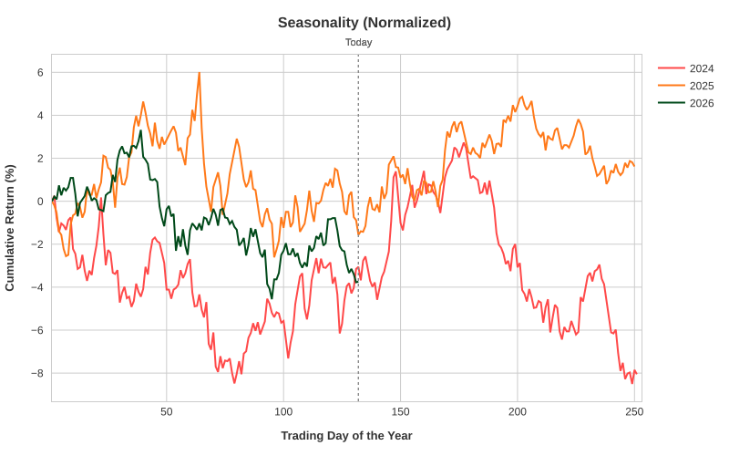
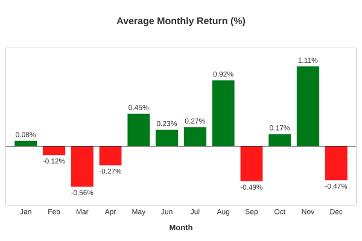
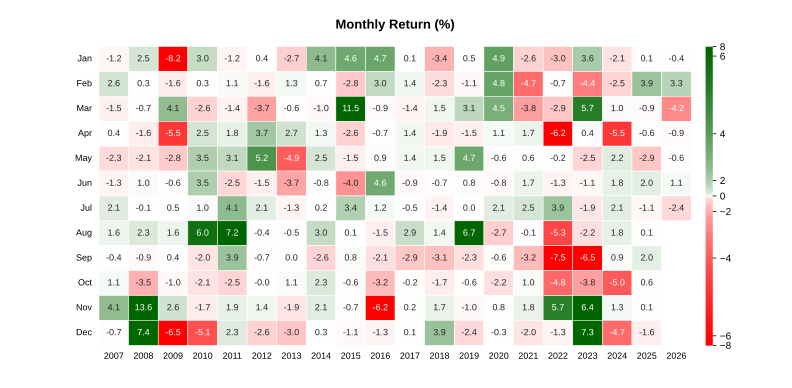
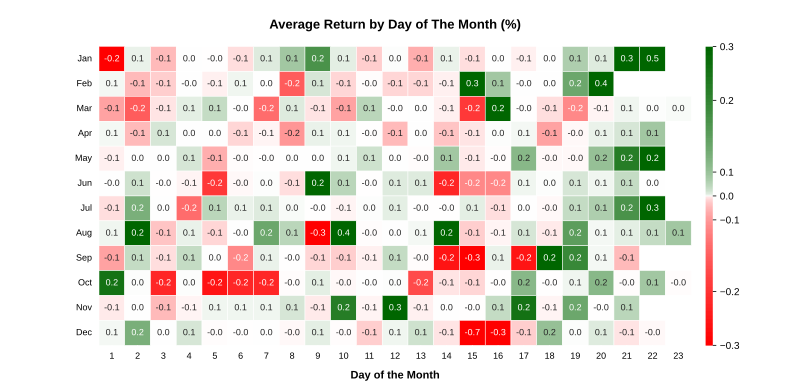
| Price | Current Conditions (%) | Overall Conditions (%) | Stability Score |
|---|---|---|---|
| Low from Previous Close > -2% | 99.11 | 95.96 | 0.99 |
| Low from Previous Close > -1% | 90.18 | 78.96 | 0.95 |
| Low from Previous Close > -0.5% | 64.29 | 50.65 | 0.92 |
| Low from Previous Close > -0.25% | 40.18 | 31.00 | 0.90 |
| High from Previous Close > 0.25% | 68.75 | 68.13 | 0.99 |
| High from Previous Close > 0.5% | 50.00 | 48.60 | 0.97 |
| High from Previous Close > 1% | 16.96 | 21.32 | 0.92 |
| High from Previous Close > 2% | 0.00 | 3.82 | 0.73 |
| Close from Previous Close > -1% | 98.21 | 90.34 | 0.99 |
| Close from Previous Close > -0.5% | 83.93 | 76.43 | 0.97 |
| Close from Previous Close > 0% | 58.93 | 50.11 | 0.96 |
| Close from Previous Close > 0.5% | 22.32 | 24.61 | 0.99 |
| Close from Previous Close > 1% | 8.04 | 9.36 | 0.90 |
| Range Within ±0.5% of Previous Close | 21.43 | 14.77 | 0.85 |
| Range Within ±1% of Previous Close | 74.11 | 59.25 | 0.92 |
| Range Within ±2% of Previous Close | 99.11 | 92.16 | 0.98 |
| Range Within ±3% of Previous Close | 100.00 | 97.91 | 0.99 |
| Close Within ±0.5% of Previous Close | 61.61 | 51.82 | 0.96 |
| Close Within ±1% of Previous Close | 90.18 | 80.97 | 0.97 |
| Volatility | 5-Day | 21-Day | Note |
|---|---|---|---|
| Realized Volatility (RV) (%) | 1.49 | 2.9 | Accumulated over the last N periods (not annualized) |
| 52-Week RV Percentile (%) | 71.0 | 61.0 | |
| RV Regime | Normal Volatility | Normal Volatility | |
| MEPR | 103.77 – 110.15 | 100.75 – 113.17 | Coverage Rate: 99.08% / 99.98% |
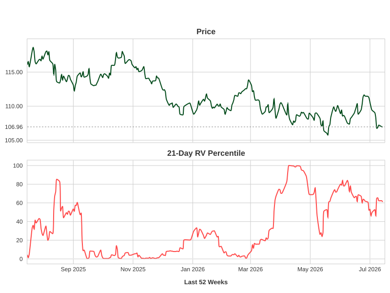
| Absolute Range (%) | Current Conditions (%) | Overall Conditions (%) | |||||||
|---|---|---|---|---|---|---|---|---|---|
| Mon | Tue | Wed | Thu | Fri | Absolute Range from Friday Close to Wednesday | Absolute Range from Wednesday Close to Friday | Absolute Range from Friday Close to Wednesday | Absolute Range from Wednesday Close to Friday | |
| count | 982 | 1003 | 1002 | 1002 | 988 | 3 | 23 | 973 | 974 |
| mean | 0.98 | 1.03 | 1.05 | 1.08 | 1.11 | 1.21 | 1.30 | 1.78 | 1.53 |
| std | 0.65 | 0.68 | 0.65 | 0.68 | 0.74 | 0.96 | 0.58 | 1.14 | 0.94 |
| min | 0.19 | 0.21 | 0.05 | 0.00 | 0.09 | 0.51 | 0.50 | 0.28 | 0.32 |
| 25% | 0.58 | 0.59 | 0.60 | 0.64 | 0.62 | 0.66 | 0.88 | 1.04 | 0.91 |
| 50% | 0.79 | 0.85 | 0.89 | 0.94 | 0.93 | 0.82 | 1.32 | 1.45 | 1.27 |
| 75% | 1.19 | 1.25 | 1.31 | 1.31 | 1.34 | 1.56 | 1.57 | 2.20 | 1.88 |
| max | 6.18 | 4.90 | 6.66 | 7.34 | 8.35 | 2.30 | 2.76 | 8.34 | 8.27 |
| Price | Current Conditions (%) | Overall Conditions (%) | Stability Score |
|---|---|---|---|
| Low from Previous Close > -2% | 0.00 | 74.85 | 0.96 |
| Low from Previous Close > -1% | 0.00 | 47.94 | 0.91 |
| High from Previous Close > 1% | 0.00 | 53.24 | 0.98 |
| High from Previous Close > 2% | 0.00 | 25.15 | 0.95 |
| Close from Previous Close > -2% | 0.00 | 86.54 | 0.98 |
| Close from Previous Close > -1% | 0.00 | 73.08 | 0.96 |
| Close from Previous Close > 0% | 0.00 | 52.16 | 0.92 |
| Close from Previous Close > 1% | 0.00 | 28.59 | 0.93 |
| Close from Previous Close > 2% | 0.00 | 12.08 | 0.99 |
| Range Within ±1% of Previous Close | 0.00 | 10.71 | 0.87 |
| Range Within ±2% of Previous Close | 0.00 | 52.06 | 0.93 |
| Range Within ±3% of Previous Close | 0.00 | 77.11 | 0.97 |
| Close Within ±1% of Previous Close | 0.00 | 44.50 | 0.98 |
| Trend | Support/Resistance | Duration | Trend Persistence |
|---|---|---|---|
Downtrend | 109.40 | 1.00 | 0.12 |
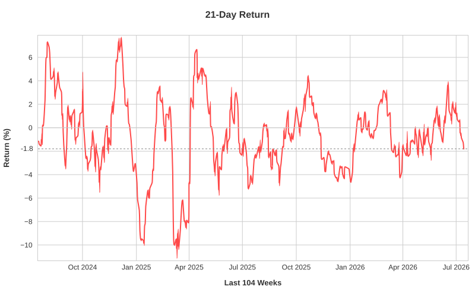
| After -5% | After -10% | After -15% | After -20% | |||||||||||||
|---|---|---|---|---|---|---|---|---|---|---|---|---|---|---|---|---|
| 5 Days5D | 21 Days21D | 63 Days63D | 252 Days252D | 5 Days5D | 21 Days21D | 63 Days63D | 252 Days252D | 5 Days5D | 21 Days21D | 63 Days63D | 252 Days252D | 5 Days5D | 21 Days21D | 63 Days63D | 252 Days252D | |
| count | 363 | 363 | 363 | 363 | 62 | 62 | 62 | 62 | 0 | 0 | 0 | 0 | 0 | 0 | 0 | 0 |
| mean | 2.24 | 4.32 | 7.01 | 10.62 | 2.99 | 5.53 | 8.09 | 9.45 | N/A | N/A | N/A | N/A | N/A | N/A | N/A | N/A |
| std | 1.96 | 3.34 | 5.91 | 7.27 | 2.26 | 3.96 | 6.43 | 5.96 | N/A | N/A | N/A | N/A | N/A | N/A | N/A | N/A |
| min | -2.02 | -2.02 | -0.30 | -0.17 | -2.02 | -2.02 | 0.25 | 0.72 | N/A | N/A | N/A | N/A | N/A | N/A | N/A | N/A |
| 25% | 0.82 | 1.77 | 2.79 | 5.22 | 1.50 | 2.37 | 3.40 | 5.09 | N/A | N/A | N/A | N/A | N/A | N/A | N/A | N/A |
| 50% | 1.78 | 3.45 | 5.24 | 8.30 | 2.59 | 5.34 | 6.03 | 9.11 | N/A | N/A | N/A | N/A | N/A | N/A | N/A | N/A |
| 75% | 3.18 | 6.06 | 8.90 | 14.84 | 4.08 | 7.50 | 11.63 | 11.86 | N/A | N/A | N/A | N/A | N/A | N/A | N/A | N/A |
| 90% | 4.85 | 9.24 | 18.13 | 21.32 | 5.27 | 11.03 | 18.81 | 18.81 | N/A | N/A | N/A | N/A | N/A | N/A | N/A | N/A |
| max | 10.41 | 15.14 | 24.94 | 34.62 | 10.41 | 14.17 | 22.84 | 22.84 | N/A | N/A | N/A | N/A | N/A | N/A | N/A | N/A |
| After -5% | After -10% | After -15% | After -20% | |||||||||||||
|---|---|---|---|---|---|---|---|---|---|---|---|---|---|---|---|---|
| 5 Days5D | 21 Days21D | 63 Days63D | 252 Days252D | 5 Days5D | 21 Days21D | 63 Days63D | 252 Days252D | 5 Days5D | 21 Days21D | 63 Days63D | 252 Days252D | 5 Days5D | 21 Days21D | 63 Days63D | 252 Days252D | |
| count | 363 | 363 | 363 | 363 | 62 | 62 | 62 | 62 | 0 | 0 | 0 | 0 | 0 | 0 | 0 | 0 |
| mean | -2.11 | -4.17 | -7.06 | -12.96 | -2.40 | -6.71 | -9.68 | -16.33 | N/A | N/A | N/A | N/A | N/A | N/A | N/A | N/A |
| std | 2.05 | 3.71 | 5.17 | 8.79 | 1.93 | 4.76 | 5.87 | 5.98 | N/A | N/A | N/A | N/A | N/A | N/A | N/A | N/A |
| min | -10.12 | -16.06 | -21.38 | -35.70 | -7.62 | -16.06 | -19.89 | -29.52 | N/A | N/A | N/A | N/A | N/A | N/A | N/A | N/A |
| 10% | -3.23 | -5.81 | -10.38 | -18.19 | -3.84 | -10.47 | -16.03 | -20.22 | N/A | N/A | N/A | N/A | N/A | N/A | N/A | N/A |
| 25% | -1.49 | -3.11 | -5.53 | -11.00 | -2.14 | -7.15 | -8.63 | -16.18 | N/A | N/A | N/A | N/A | N/A | N/A | N/A | N/A |
| 50% | -0.68 | -1.35 | -3.03 | -6.02 | -0.83 | -2.71 | -4.90 | -13.81 | N/A | N/A | N/A | N/A | N/A | N/A | N/A | N/A |
| 75% | -0.14 | -0.52 | -1.27 | -2.56 | -0.04 | -0.34 | -2.80 | -8.24 | N/A | N/A | N/A | N/A | N/A | N/A | N/A | N/A |
| max | 3.61 | 3.61 | 3.61 | 0.20 | 0.72 | 0.40 | -0.19 | -3.29 | N/A | N/A | N/A | N/A | N/A | N/A | N/A | N/A |
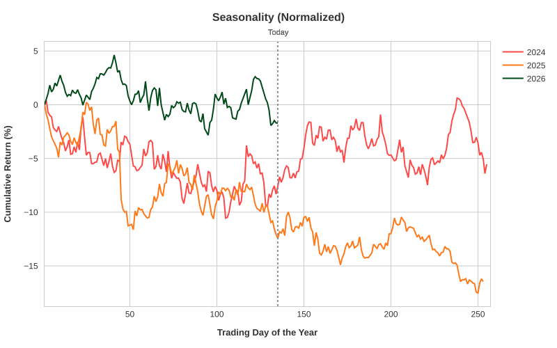
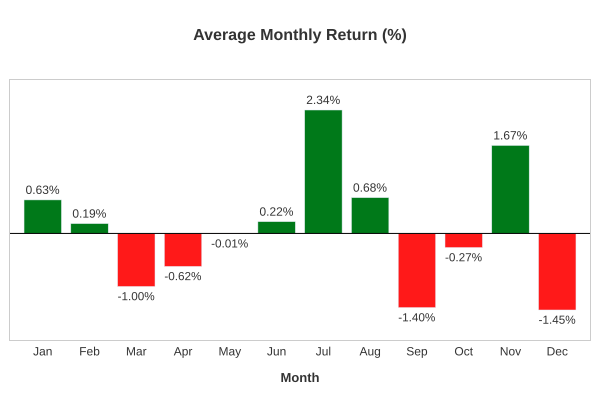
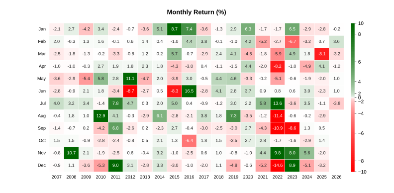
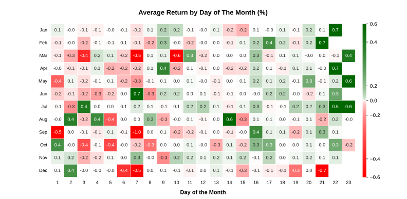
| Price | Current Conditions (%) | Overall Conditions (%) | Stability Score |
|---|---|---|---|
| Low from Previous Close > -2% | 100.00 | 92.06 | 1.00 |
| Low from Previous Close > -1% | 87.16 | 72.93 | 0.99 |
| Low from Previous Close > -0.5% | 55.05 | 46.08 | 0.98 |
| Low from Previous Close > -0.25% | 37.61 | 25.11 | 0.99 |
| High from Previous Close > 0.25% | 80.73 | 80.48 | 0.99 |
| High from Previous Close > 0.5% | 49.54 | 58.21 | 0.98 |
| High from Previous Close > 1% | 12.84 | 28.93 | 0.99 |
| High from Previous Close > 2% | 0.92 | 7.08 | 0.95 |
| Close from Previous Close > -1% | 94.50 | 87.16 | 1.00 |
| Close from Previous Close > -0.5% | 82.57 | 75.00 | 1.00 |
| Close from Previous Close > 0% | 55.96 | 52.73 | 0.99 |
| Close from Previous Close > 0.5% | 22.94 | 29.14 | 0.98 |
| Close from Previous Close > 1% | 9.17 | 14.80 | 1.00 |
| Range Within ±0.5% of Previous Close | 14.68 | 10.17 | 0.93 |
| Range Within ±1% of Previous Close | 75.23 | 47.74 | 0.99 |
| Range Within ±2% of Previous Close | 99.08 | 85.37 | 0.99 |
| Range Within ±3% of Previous Close | 100.00 | 95.29 | 1.00 |
| Close Within ±0.5% of Previous Close | 59.63 | 45.86 | 1.00 |
| Close Within ±1% of Previous Close | 85.32 | 72.36 | 0.99 |
| Volatility | 5-Day | 21-Day | Note |
|---|---|---|---|
| Realized Volatility (RV) (%) | 3.5 | 6.76 | Accumulated over the last N periods (not annualized) |
| 52-Week RV Percentile (%) | 68.0 | 55.0 | |
| RV Regime | Normal Volatility | Normal Volatility | |
| MEPR | 3769.72 – 4337.8 | 3506.05 – 4601.47 | Coverage Rate: 98.81% / 100.0% |
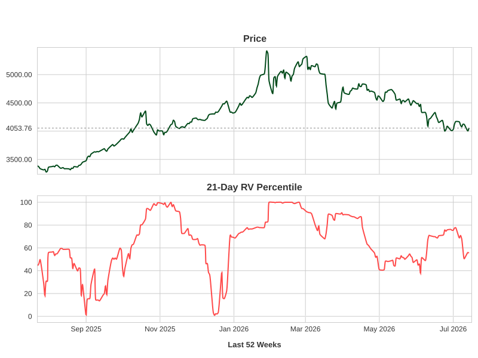
| Absolute Range (%) | Current Conditions (%) | Overall Conditions (%) | |||||||
|---|---|---|---|---|---|---|---|---|---|
| Mon | Tue | Wed | Thu | Fri | Absolute Range from Friday Close to Wednesday | Absolute Range from Wednesday Close to Friday | Absolute Range from Friday Close to Wednesday | Absolute Range from Wednesday Close to Friday | |
| count | 1059 | 1068 | 1065 | 1067 | 1053 | 22 | 16 | 1046 | 1047 |
| mean | 1.23 | 1.25 | 1.30 | 1.30 | 1.41 | 1.24 | 1.22 | 2.25 | 1.97 |
| std | 0.97 | 0.84 | 1.73 | 0.85 | 2.29 | 0.37 | 0.40 | 2.06 | 2.41 |
| min | 0.12 | 0.02 | 0.21 | 0.21 | 0.13 | 0.65 | 0.70 | 0.38 | 0.35 |
| 25% | 0.62 | 0.68 | 0.70 | 0.72 | 0.72 | 0.90 | 1.00 | 1.28 | 1.09 |
| 50% | 0.96 | 1.04 | 1.00 | 1.08 | 1.10 | 1.22 | 1.12 | 1.79 | 1.54 |
| 75% | 1.50 | 1.55 | 1.54 | 1.59 | 1.58 | 1.53 | 1.30 | 2.73 | 2.30 |
| max | 9.96 | 7.16 | 49.16 | 7.50 | 50.41 | 1.94 | 2.25 | 49.45 | 50.65 |
| Price | Current Conditions (%) | Overall Conditions (%) | Stability Score |
|---|---|---|---|
| Low from Previous Close > -2% | 0.00 | 67.60 | 0.98 |
| Low from Previous Close > -1% | 0.00 | 40.73 | 0.98 |
| High from Previous Close > 1% | 0.00 | 64.14 | 0.98 |
| High from Previous Close > 2% | 0.00 | 37.27 | 1.00 |
| Close from Previous Close > -2% | 0.00 | 85.11 | 1.00 |
| Close from Previous Close > -1% | 0.00 | 73.41 | 0.99 |
| Close from Previous Close > 0% | 0.00 | 55.90 | 0.99 |
| Close from Previous Close > 1% | 0.00 | 36.05 | 0.98 |
| Close from Previous Close > 2% | 0.00 | 20.32 | 1.00 |
| Range Within ±1% of Previous Close | 0.00 | 4.12 | 0.90 |
| Range Within ±2% of Previous Close | 0.00 | 35.77 | 0.98 |
| Range Within ±3% of Previous Close | 0.00 | 64.42 | 1.00 |
| Close Within ±1% of Previous Close | 0.00 | 37.36 | 0.99 |
| Trend | Support/Resistance | Duration | Trend Persistence |
|---|---|---|---|
Downtrend | 4208.78 | 9.00 | 1.00 |
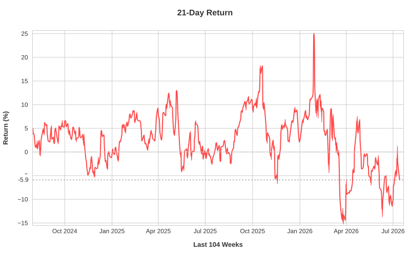
| After -5% | After -10% | After -15% | After -20% | |||||||||||||
|---|---|---|---|---|---|---|---|---|---|---|---|---|---|---|---|---|
| 5 Days5D | 21 Days21D | 63 Days63D | 252 Days252D | 5 Days5D | 21 Days21D | 63 Days63D | 252 Days252D | 5 Days5D | 21 Days21D | 63 Days63D | 252 Days252D | 5 Days5D | 21 Days21D | 63 Days63D | 252 Days252D | |
| count | 510 | 495 | 485 | 466 | 90 | 86 | 83 | 75 | 22 | 22 | 22 | 21 | 0 | 0 | 0 | 0 |
| mean | 2.59 | 5.79 | 9.94 | 17.76 | 4.06 | 9.54 | 15.16 | 23.26 | 4.66 | 10.14 | 18.77 | 31.69 | N/A | N/A | N/A | N/A |
| std | 2.33 | 4.40 | 6.41 | 11.70 | 2.05 | 4.35 | 6.17 | 13.55 | 2.26 | 4.53 | 5.16 | 12.90 | N/A | N/A | N/A | N/A |
| min | -0.13 | 0.06 | 0.06 | 0.06 | -0.13 | 0.87 | 3.93 | 3.93 | -0.13 | 2.23 | 10.40 | 10.40 | N/A | N/A | N/A | N/A |
| 25% | 1.07 | 2.35 | 4.65 | 9.35 | 2.80 | 6.33 | 10.69 | 14.01 | 3.83 | 6.33 | 14.92 | 23.19 | N/A | N/A | N/A | N/A |
| 50% | 2.08 | 4.92 | 9.64 | 15.20 | 4.14 | 8.97 | 14.72 | 19.45 | 4.39 | 11.31 | 19.52 | 25.90 | N/A | N/A | N/A | N/A |
| 75% | 3.42 | 7.75 | 13.68 | 24.93 | 5.50 | 12.64 | 18.89 | 29.23 | 6.16 | 12.92 | 22.06 | 45.28 | N/A | N/A | N/A | N/A |
| 90% | 5.16 | 11.73 | 17.97 | 33.67 | 6.78 | 16.16 | 24.66 | 45.52 | 6.80 | 16.20 | 25.60 | 45.97 | N/A | N/A | N/A | N/A |
| max | 21.37 | 25.03 | 37.65 | 66.09 | 9.58 | 18.91 | 30.85 | 50.52 | 9.58 | 18.17 | 26.89 | 47.12 | N/A | N/A | N/A | N/A |
| After -5% | After -10% | After -15% | After -20% | |||||||||||||
|---|---|---|---|---|---|---|---|---|---|---|---|---|---|---|---|---|
| 5 Days5D | 21 Days21D | 63 Days63D | 252 Days252D | 5 Days5D | 21 Days21D | 63 Days63D | 252 Days252D | 5 Days5D | 21 Days21D | 63 Days63D | 252 Days252D | 5 Days5D | 21 Days21D | 63 Days63D | 252 Days252D | |
| count | 510 | 495 | 485 | 466 | 90 | 86 | 83 | 75 | 22 | 22 | 22 | 21 | 0 | 0 | 0 | 0 |
| mean | -2.17 | -3.71 | -6.36 | -10.50 | -2.79 | -4.46 | -7.75 | -8.13 | -3.83 | -5.67 | -8.48 | -8.44 | N/A | N/A | N/A | N/A |
| std | 2.29 | 3.29 | 5.43 | 9.07 | 2.77 | 3.29 | 5.63 | 5.63 | 2.78 | 3.09 | 5.19 | 5.30 | N/A | N/A | N/A | N/A |
| min | -14.27 | -15.29 | -21.90 | -43.65 | -13.33 | -13.33 | -17.55 | -22.72 | -10.55 | -10.84 | -17.40 | -17.40 | N/A | N/A | N/A | N/A |
| 10% | -2.68 | -5.14 | -8.79 | -14.27 | -3.78 | -6.39 | -12.80 | -13.50 | -4.71 | -7.72 | -12.99 | -13.18 | N/A | N/A | N/A | N/A |
| 25% | -1.50 | -2.75 | -4.90 | -7.80 | -1.82 | -3.52 | -5.93 | -5.70 | -3.65 | -5.31 | -6.13 | -5.84 | N/A | N/A | N/A | N/A |
| 50% | -0.73 | -1.17 | -1.95 | -4.21 | -1.01 | -1.78 | -3.09 | -3.86 | -1.69 | -4.04 | -4.56 | -4.49 | N/A | N/A | N/A | N/A |
| 75% | -0.28 | -0.49 | -0.77 | -1.73 | -0.23 | -1.06 | -1.46 | -2.59 | -0.98 | -1.62 | -3.57 | -3.53 | N/A | N/A | N/A | N/A |
| max | 0.25 | 0.25 | 0.17 | 0.06 | 0.17 | 0.17 | 0.17 | -0.91 | -0.12 | -0.12 | -0.91 | -0.91 | N/A | N/A | N/A | N/A |
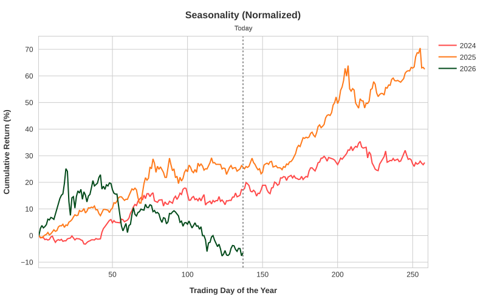
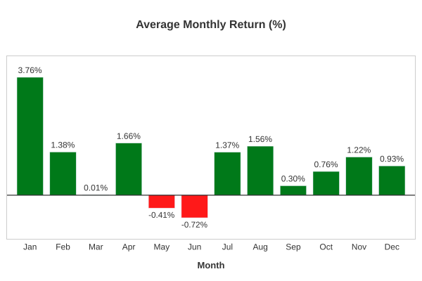
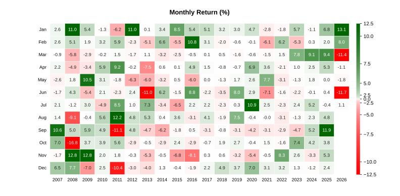
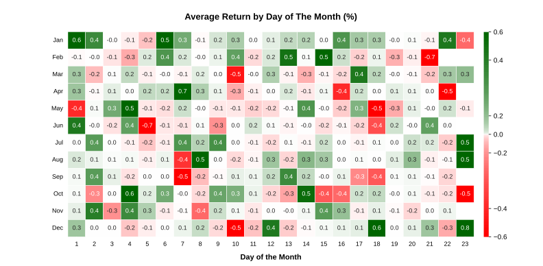
| Price | Current Conditions (%) | Overall Conditions (%) | Stability Score |
|---|---|---|---|
| Low from Previous Close > -2% | 100.00 | 99.37 | 1.00 |
| Low from Previous Close > -1% | 84.62 | 91.45 | 0.98 |
| Low from Previous Close > -0.5% | 65.38 | 67.61 | 0.94 |
| Low from Previous Close > -0.25% | 26.92 | 40.02 | 0.90 |
| High from Previous Close > 0.25% | 42.31 | 60.34 | 0.94 |
| High from Previous Close > 0.5% | 23.08 | 32.49 | 0.88 |
| High from Previous Close > 1% | 0.00 | 8.87 | 0.78 |
| High from Previous Close > 2% | 0.00 | 0.69 | 0.72 |
| Close from Previous Close > -1% | 92.31 | 95.96 | 0.99 |
| Close from Previous Close > -0.5% | 80.77 | 83.89 | 0.98 |
| Close from Previous Close > 0% | 50.00 | 50.05 | 1.00 |
| Close from Previous Close > 0.5% | 3.85 | 15.99 | 0.87 |
| Close from Previous Close > 1% | 0.00 | 4.42 | 0.77 |
| Range Within ±0.5% of Previous Close | 46.15 | 39.55 | 0.83 |
| Range Within ±1% of Previous Close | 84.62 | 82.84 | 0.95 |
| Range Within ±2% of Previous Close | 100.00 | 98.68 | 1.00 |
| Range Within ±3% of Previous Close | 100.00 | 99.85 | 1.00 |
| Close Within ±0.5% of Previous Close | 76.92 | 67.90 | 0.94 |
| Close Within ±1% of Previous Close | 92.31 | 91.54 | 0.98 |
| Volatility | 5-Day | 21-Day | Note |
|---|---|---|---|
| Realized Volatility (RV) (%) | 1.46 | 2.38 | Accumulated over the last N periods (not annualized) |
| 52-Week RV Percentile (%) | 84.0 | 68.0 | |
| RV Regime | High Volatility | Normal Volatility | |
| MEPR | 1.13 – 1.19 | 1.11 – 1.22 | Coverage Rate: 98.97% / 100.0% |
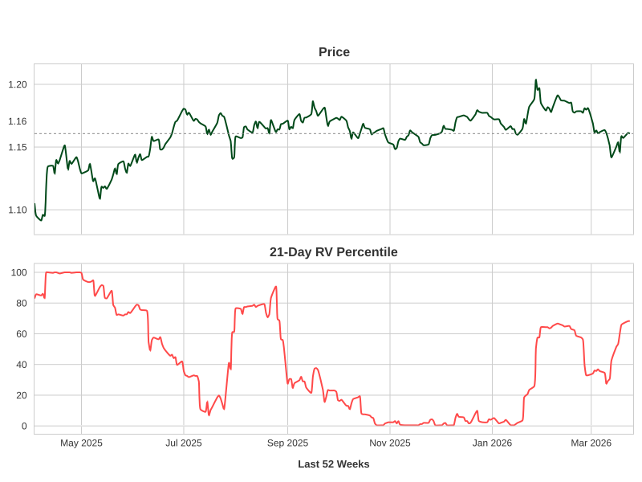
| Absolute Range (%) | Current Conditions (%) | Overall Conditions (%) | |||||||
|---|---|---|---|---|---|---|---|---|---|
| Mon | Tue | Wed | Thu | Fri | Absolute Range from Friday Close to Wednesday | Absolute Range from Wednesday Close to Friday | Absolute Range from Friday Close to Wednesday | Absolute Range from Wednesday Close to Friday | |
| count | 1359 | 1363 | 1362 | 1363 | 1364 | 13 | 10 | 1356 | 1357 |
| mean | 0.64 | 0.67 | 0.68 | 0.71 | 0.71 | 1.38 | 1.07 | 1.15 | 1.01 |
| std | 0.41 | 0.41 | 0.40 | 0.41 | 0.43 | 0.81 | 0.47 | 0.67 | 0.59 |
| min | 0.11 | 0.10 | 0.08 | 0.10 | 0.04 | 0.57 | 0.43 | 0.22 | 0.17 |
| 25% | 0.35 | 0.39 | 0.41 | 0.43 | 0.41 | 0.78 | 0.76 | 0.70 | 0.60 |
| 50% | 0.53 | 0.57 | 0.59 | 0.62 | 0.62 | 1.08 | 1.10 | 0.99 | 0.88 |
| 75% | 0.79 | 0.82 | 0.85 | 0.89 | 0.87 | 1.85 | 1.26 | 1.42 | 1.24 |
| max | 3.53 | 3.37 | 4.27 | 3.46 | 4.69 | 3.44 | 1.88 | 8.00 | 6.22 |
| Price | Current Conditions (%) | Overall Conditions (%) | Stability Score |
|---|---|---|---|
| Low from Previous Close > -2% | 66.67 | 89.98 | 0.97 |
| Low from Previous Close > -1% | 66.67 | 61.59 | 0.92 |
| High from Previous Close > 1% | 66.67 | 38.99 | 0.88 |
| High from Previous Close > 2% | 33.33 | 11.63 | 0.81 |
| Close from Previous Close > -2% | 100.00 | 94.44 | 0.98 |
| Close from Previous Close > -1% | 100.00 | 81.35 | 0.97 |
| Close from Previous Close > 0% | 66.67 | 49.96 | 0.98 |
| Close from Previous Close > 1% | 66.67 | 20.41 | 0.84 |
| Close from Previous Close > 2% | 33.33 | 5.05 | 0.76 |
| Range Within ±1% of Previous Close | 0.00 | 28.82 | 0.74 |
| Range Within ±2% of Previous Close | 33.33 | 78.57 | 0.94 |
| Range Within ±3% of Previous Close | 100.00 | 94.00 | 0.98 |
| Close Within ±1% of Previous Close | 33.33 | 60.94 | 0.90 |
| Trend | Support/Resistance | Duration | Trend Persistence |
|---|---|---|---|
Downtrend | 1.16 | 8.00 | 0.57 |
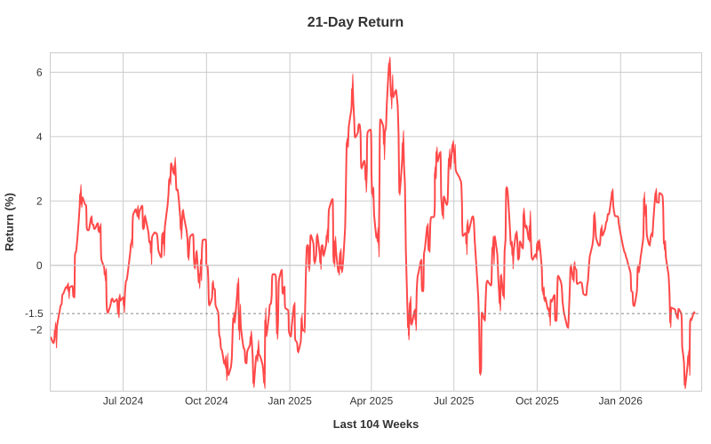
| After -5% | After -10% | After -15% | After -20% | |||||||||||||
|---|---|---|---|---|---|---|---|---|---|---|---|---|---|---|---|---|
| 5 Days5D | 21 Days21D | 63 Days63D | 252 Days252D | 5 Days5D | 21 Days21D | 63 Days63D | 252 Days252D | 5 Days5D | 21 Days21D | 63 Days63D | 252 Days252D | 5 Days5D | 21 Days21D | 63 Days63D | 252 Days252D | |
| count | 187 | 187 | 187 | 187 | 6 | 6 | 6 | 6 | 0 | 0 | 0 | 0 | 0 | 0 | 0 | 0 |
| mean | 1.71 | 3.08 | 6.19 | 10.55 | 3.45 | 4.11 | 15.25 | 16.89 | N/A | N/A | N/A | N/A | N/A | N/A | N/A | N/A |
| std | 1.40 | 2.31 | 4.40 | 6.86 | 2.49 | 1.73 | 1.91 | 2.29 | N/A | N/A | N/A | N/A | N/A | N/A | N/A | N/A |
| min | -0.08 | -0.06 | 0.03 | 0.03 | 0.12 | 1.80 | 12.69 | 13.64 | N/A | N/A | N/A | N/A | N/A | N/A | N/A | N/A |
| 25% | 0.66 | 1.42 | 2.52 | 4.93 | 1.59 | 2.97 | 13.98 | 15.60 | N/A | N/A | N/A | N/A | N/A | N/A | N/A | N/A |
| 50% | 1.41 | 2.53 | 5.70 | 9.51 | 3.83 | 4.16 | 15.29 | 16.88 | N/A | N/A | N/A | N/A | N/A | N/A | N/A | N/A |
| 75% | 2.37 | 4.32 | 8.28 | 16.61 | 5.21 | 5.21 | 16.46 | 18.43 | N/A | N/A | N/A | N/A | N/A | N/A | N/A | N/A |
| 90% | 3.71 | 6.22 | 13.04 | 20.00 | 5.88 | 5.88 | 17.20 | 19.18 | N/A | N/A | N/A | N/A | N/A | N/A | N/A | N/A |
| max | 6.43 | 14.42 | 17.81 | 25.30 | 6.43 | 6.43 | 17.81 | 19.80 | N/A | N/A | N/A | N/A | N/A | N/A | N/A | N/A |
| After -5% | After -10% | After -15% | After -20% | |||||||||||||
|---|---|---|---|---|---|---|---|---|---|---|---|---|---|---|---|---|
| 5 Days5D | 21 Days21D | 63 Days63D | 252 Days252D | 5 Days5D | 21 Days21D | 63 Days63D | 252 Days252D | 5 Days5D | 21 Days21D | 63 Days63D | 252 Days252D | 5 Days5D | 21 Days21D | 63 Days63D | 252 Days252D | |
| count | 187 | 187 | 187 | 187 | 6 | 6 | 6 | 6 | 0 | 0 | 0 | 0 | 0 | 0 | 0 | 0 |
| mean | -1.68 | -2.93 | -5.43 | -6.60 | -3.21 | -3.39 | -3.39 | -3.39 | N/A | N/A | N/A | N/A | N/A | N/A | N/A | N/A |
| std | 1.34 | 1.93 | 4.58 | 4.88 | 1.84 | 1.65 | 1.65 | 1.65 | N/A | N/A | N/A | N/A | N/A | N/A | N/A | N/A |
| min | -7.56 | -8.67 | -17.39 | -17.39 | -5.61 | -5.61 | -5.61 | -5.61 | N/A | N/A | N/A | N/A | N/A | N/A | N/A | N/A |
| 10% | -2.36 | -4.23 | -7.41 | -9.79 | -4.53 | -4.53 | -4.53 | -4.53 | N/A | N/A | N/A | N/A | N/A | N/A | N/A | N/A |
| 25% | -1.42 | -2.59 | -3.91 | -4.87 | -3.20 | -3.20 | -3.20 | -3.20 | N/A | N/A | N/A | N/A | N/A | N/A | N/A | N/A |
| 50% | -0.64 | -1.34 | -2.38 | -2.63 | -1.57 | -2.32 | -2.32 | -2.32 | N/A | N/A | N/A | N/A | N/A | N/A | N/A | N/A |
| 75% | -0.23 | -0.63 | -1.17 | -1.29 | -1.27 | -1.81 | -1.81 | -1.81 | N/A | N/A | N/A | N/A | N/A | N/A | N/A | N/A |
| max | 0.16 | -0.05 | -0.15 | -0.15 | -1.22 | -1.32 | -1.32 | -1.32 | N/A | N/A | N/A | N/A | N/A | N/A | N/A | N/A |
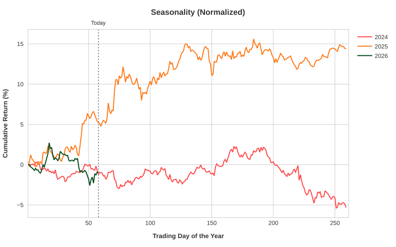
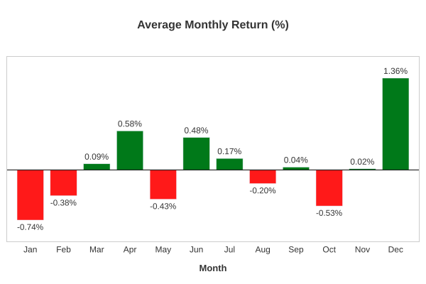
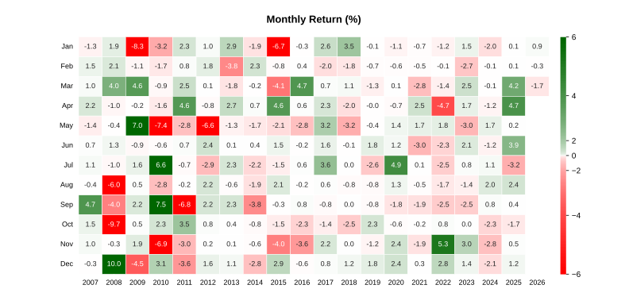
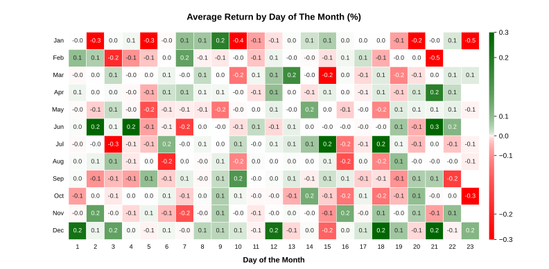
The information presented on this website is provided for informational and educational purposes only. It does not constitute investment advice, financial advice, trading advice, or any other type of recommendation, and should not be relied upon as such. All data, statistics, and analyses are provided “as is” without any representations or warranties, express or implied, including but not limited to accuracy, completeness, or timeliness. While reasonable efforts may be made to ensure the quality of the information, errors or omissions may occur. No statement, indication, sign, value or number on this website should be interpreted as a solicitation, recommendation, or endorsement to buy, sell, or hold any financial instrument, including but not limited to equities, commodities, indices, currencies, or derivatives. The author assumes no responsibility or liability for any losses, damages, or other consequences resulting from the use of, or reliance on, the information presented on this website. Any decisions made based on this information are the sole responsibility of the user. Users are encouraged to conduct their own research and consult with a qualified financial professional before making any investment decisions. Data may be sourced from third-party providers and is subject to their respective terms and potential inaccuracies. This website is not intended for use in jurisdictions where such information would be contrary to local laws or regulations.